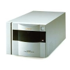

器材库 > 底片扫描仪 > Super CoolScan 8000 ED

详细规格
发布日期
2001
可支持的胶片格式
中片幅：正片及负片、35mm：正片及负片、16mm：正片及负片、电子显微镜：正片及负片（面积59 x 82mm）
扫描元件
10000像素，3行单色线性CCD影像感应器
光源
RGB，D-LED阵列
光学分辨率
4000dpi
扫描模式
固定光学、可移动媒介、平行单次式扫描系统
扫描位深
A/D转换：红绿蓝每通道各为14位；输出：每通道各为16位或8位（用户选择）
密度范围
4.2
扫描速度
[35mm, FH-835M] 55秒/4000dpi [6 x 9, FH-869S] 170秒/4000dpi
有效扫描区域
63.5 x 88 mm
对焦
自动对焦, 手动对焦
接口
IEEE1394 (6针)
电源要求
100-240V AC, 0.3-0.2A, 50/60Hz
尺寸
245 x 485 x 200mm
重量
9kg
来禄司蔡卡徕2020-09-17 16:393.81 分
操作性 3.50功能性 4.50美观性 3.00趣味性 4.50耐用性 2.50性价比 3.50解像力 4.00色彩还原 5.00
Luft2016-03-02 16:224.13 分
操作性 3.50功能性 4.50美观性 4.00趣味性 4.00耐用性 3.00性价比 5.00解像力 4.00色彩还原 5.00
2in32008-08-14 02:133.69 分
操作性 3.00功能性 5.00美观性 4.00趣味性 0.50耐用性 5.00性价比 3.00解像力 4.50色彩还原 4.50
Tianmou2007-07-05 20:533.88 分
操作性 4.00功能性 4.00美观性 4.00趣味性 3.50耐用性 4.00性价比 3.50解像力 4.00色彩还原 4.00
豆汤2005-11-22 12:093.25 分
操作性 3.50功能性 3.50美观性 4.00趣味性 2.50耐用性 2.50性价比 4.00解像力 2.50色彩还原 3.50
美美的2005-03-16 17:183.94 分
操作性 3.00功能性 5.00美观性 3.00趣味性 3.00耐用性 5.00性价比 2.50解像力 5.00色彩还原 5.00
gexe62004-09-13 10:312.69 分
操作性 3.00功能性 3.50美观性 2.50趣味性 1.00耐用性 2.50性价比 2.50解像力 2.00色彩还原 4.50
范畴2004-08-11 19:123.75 分
操作性 2.50功能性 3.50美观性 4.50趣味性 4.50耐用性 4.00性价比 3.00解像力 4.00色彩还原 4.00
夏利20002003-11-28 17:164.44 分
操作性 4.50功能性 4.50美观性 4.50趣味性 4.00耐用性 4.50性价比 3.50解像力 5.00色彩还原 5.00
啊俊2002-04-12 22:434.31 分
操作性 4.00功能性 4.50美观性 4.50趣味性 4.00耐用性 4.50性价比 4.00解像力 4.50色彩还原 4.50
产品图 / 样片
尼康 Super CoolScan 8000ED